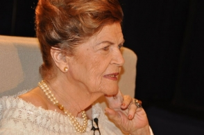

“SI LUCHÉ Y EXPUSE MI VIDA, ¿CÓMO ME IBA A IR DESPUÉS?”
por Silvina Friera.
Carilda Oliver Labra tiene 90 años. Comenzó a publicar en 1949, cuando sorprendió al mundillo literario.
Desde Matanzas
“No soy alondra, soy lechuza; por las noches estoy feliz”, dice Carilda Oliver Labra, una de las voces más importantes de la poesía hispanoamericana de la segunda mitad del siglo XX.
Ahora que el almendrón -un taxi-colectivo- toma la vía Blanca y comienza a salir de La Habana rumbo a Matanzas, llega el recuerdo de la charla telefónica, cuando aceptó la entrevista con Página/12 con la única condición de que no fuera temprano.
El paisaje, a medida que se interna en la provincia de Mayabeque, se vuelve más rural: vacas, toros y caballos pastorean tan campantes que producen un sentimiento semejante a la envidia.
Un hurón cruza la ruta y esquiva el almendrón justo a tiempo. “La tierra” es un bello poema de Carilda que viene a la mente:
“Cuando vino mi abuela
trajo un poco de tierra española,
cuando se fue mi madre
llevó un poco de tierra cubana.
Yo no guardaré conmigo ningún poco de patria:
la quiero toda
sobre mi tumba”.
Camilo, el chofer, licenciado en matemática que hasta 1994 dio clases en escuelas secundarias, oficia de guía turístico.
De pronto señala la fábrica de ron Havana Club, en Santa Cruz del Norte. La pupila levita hechizada por obra y gracia del valle del Yumurí y del puente Bacunayagua. Tiene 110 metros; es el más alto del país y divide la provincia de Mayabeque con Matanzas, “la ciudad de los puentes”, la Atenas de Cuba.
En menos de lo que canta un gallo, pero después de dos horas y media de viaje y 90 kilómetros de recorrido, se llega al barrio Pueblo Nuevo, a la Calzada de Tirry 81, la calle que conduce
hacia el mundo de la poeta cubana que ama “el tiempo y sus transfiguraciones cósmicas”.
La casa donde vive Carilda es de 1885. “Todos los vitrales son italianos. Este vitral -señala uno entre el comedor y el patio- es el único que queda entero en Matanzas, pero en un ciclón se rompió un poquito. Yo le pongo un papelito de los que usan los escenógrafos, del mismo color, y no se ve.
Pero como ha llovido se ha caído. Todo es antiquísimo. Los canteros son de la fundación de la casa; están semidestruidos porque no los hemos querido tocar.
Nos mudamos en 1926. Yo nací en el ’22. O sea que llevo 86 años viviendo acá, porque cumplí 90 en julio. Soy casi tan vieja como la casa.” Hay que ver a Carilda sonreír; sacude despacito los hombros y las mejillas se ruborizan levemente. A sus pies se acomoda un perro salchicha que tiene quince años y anda peinando canas. “Como era muy majadero y se comía los calcetines de Raydel, le puso Stalin. Pero responde al nombre de ‘Papito'”, revela Carilda. “Papito” alza las orejas y mueve la cola, festejando la oportuna aclaración.
En el patio, un puñado de gatos de todos los colores y tamaños corretean, saltan por el aire y parecen los reyes del equilibro cuando caminan por los bordes de las macetas. La familia felina se agrandó: dos de las gatas tuvieron cría; ahora son 16.
“Siempre tuve gatos, desde niña. Primero tenía uno solo, maravilloso, que cuando me fui a los Estados Unidos a visitar a mi familia, quince días nada más, se negó a comer y se murió. Cuando volví, mi suegra lo había enterrado en un cantero. Ghandi se llamaba. Lloré muchísimo, me puse muy mal.”
La poeta matancera presentará en la próxima Feria del Libro de La Habana Una mujer escribe (Ediciones Matanzas), una antología de su poesía prologada por Raydel H. Fernández, marido de la poeta cincuenta años menor que ella, realizada para celebrar los 90 años de Carilda.
Como una maga, abre las manos y aparece el ejemplar de Desaparece el polvo, una miniatura amarilla de tapa dura con edición y prólogo de Antonio Piedra, publicada en España. “Fíjate cómo está; los tenía guardados uno pegadito con el otro. ¡Yo no sé qué ha pasado!”, se queja. La humedad, como siempre, cumplió el papel de alumna ejemplar.
La tapa de la encantadora miniatura se descascara. “Este libro está relacionado con problemas personales, ¿comprendes? Estuve vetada, no se me publicó durante mucho tiempo, entre el ’63 y el ’78. En el ’78 me arriesgué a ir al Concurso 26 de Julio. Me dieron un diploma y me citaron al sitio en La Habana donde entregaban el premio. Desde el momento en que voy al premio, es porque veo una situación favorable.”
Silvina Friera-¿Qué fue lo que pasó?
Carilda Oliver Labra -Nada… Mira: ni el mismo Fidel creo que sepa lo que pasó. El directamente no tuvo que ver nada con eso. Me parece a mí que fue un problema entre escritores, claro que escritores con poder político.
¡Si yo había escrito Canto a Fidel cuando Fidel estaba en la Sierra! Después del triunfo de la Revolución, estaba satisfecha; se me había cumplido un sueño, una aspiración, una necesidad de ver libre a mi país. Entonces la Revolución viene con sus reformas, sus nuevos modos; se van echando abajo muchos prejuicios.
Es un nacimiento de una era totalmente nueva. A mí eso no me llama a la poesía y salto sobre eso. Pero estoy tranquila, un tiempo sin escribir o escribiendo cosas que no tenían nada que ver con la Revolución, más bien de mi vida personal, amorosa; toda la poesía erótica que, claro, desde temprano tenía esa línea. Ha pasado el tiempo y se han hecho estudios, reuniones; hemos sido convocados por la misma Revolución, por los líderes, a explicar qué pasó.
En ningún momento se me ocurrió irme de mi país porque no me publicaban. Eso jamás me pasó por la mente porque Cuba siempre tiene que estar sobre todo, ¿entiendes?
SF -¿Por qué se queda usted, Carilda?
COL -Yo me quedo por amor, chica, porque amo a mi patria. Si luché y expuse mi vida, ¿cómo me iba a ir después? No me podía ir porque lo que yo quería estaba en el gobierno, ¿te das cuenta? Ahora tengo mis disensiones con distintas acciones de la Revolución.
Pero no me siento capaz de discutirlas porque yo soy revolucionaria natural. No soy una persona que me rija por determinadas reglas. Yo soy muy libre siempre. He acatado todo lo que veo que ha sido maravilloso porque la Revolución ha dado cambios en la cultura y en todos los sentidos. Con Desaparece el polvo empiezo otra vez a ser reconocida. O sea que no es que ellos entiendan la Revolución, sino que la Revolución me entiende a mí.
Parece una locura lo que te estoy diciendo, pero es así. Muchos de los escritores que ahora están dirigiendo estuvieron vetados. ¿Qué quiere decir? Que no hay sólo una toma de conciencia del escritor, sino de la Revolución. Y esos que parecían enemigos nunca lo fueron porque si no hoy no podrían estar en los lugares que están. Y eso, chica, es una cosa sociológica.
SF-Mientras escribía los poemas eróticos sabía que iba a incomodar, ¿no?
COL -Eso sí, he ejercido mi libertad, me he sentido mujer. Yo amaba la libertad y escribía también lo que me daba la gana. Claro que me acuerdo de que al principio escondía mis versos porque me daba como pena, pero no porque contuviera nada excesivamente atrevido. Esta es una labor de tanta intimidad con el papel, con la tinta, viene a ser un oficio que parece misterioso y que no se da siempre.
Uno sabe cuando llega el verso que sirve y cuando llega el otro que hay que desechar. La poesía es una visita prodigiosa cuando se da porque a veces uno pasa mucho tiempo y no consigue nada. Un verso no siempre es poesía. Y la poesía está en todas partes, no sólo en el verso. Empecé a escribir después de los primeros libros; empecé a tener, sin darme cuenta, un idioma propio, un modo de expresarme.
SF -¿Recuerda cómo surgió el poema “Me desordeno, amor, me desordeno”?
COL -Lo escribí muy joven. Neruda me dijo una frase muy bonita que la escribió en una breve carta: “En ‘Me desordeno, amor, me desordeno’ se ve el agua sobre el fuego”. ¿Cómo es Me desordeno…?
“Me desordeno, amor, me desordeno
cuando voy en tu boca demorada”.
Fíjate que dice “te toco con la punta de mis senos”. Pero de ahí no pasa porque luego al final dice… (piensa) Espérate, a ver… yo me lo sé de memoria, pero a veces se me olvida. “Y aunque quiero besarte arrodillada…”
¿qué quiere decir el arrodillada? La gente lo interpreta mal; interpreta que estoy arrodillada y mira dónde toca la boca (risas). Y ahí viene todo lo que viene detrás, pero no es así.
“Y aunque quiero besarte arrodillada
cuando voy en tu boca demorada
me desordeno, amor, me desordeno.”
Quiere decir que no está arrodillada con pasión; es con veneración. Pero sin embargo, el sexo se pronuncia. A pesar de que te quiero besar arrodillada, me desordeno cuando te beso. Viene el sexo. Fíjate que es la naturaleza de la mujer, de la muchacha joven, de la que empieza. Es un poema del descubrimiento de la joven, pero no se lo escribo a ningún hombre.
SF -¿En serio?
COL -Sí, ese poema lo escribo cuando bajo de un lugar muy lindo aquí, que se llama Monserrat. Ahí se daban unos bailes para despedir a los que se iban a casar. Estaba sola con una tía que me acompañó porque había que subir la loma, coger un carro, todo ese tipo de cosas. La noche caía.
La gente estaba bebiendo muy suavemente, sonaba una música linda; vals, que era lo que se bailaba. Y había una muchacha muy joven, mucho más joven que yo, que bailaba con un joven. Primero bailaban más separados, luego más unidos, después estaban completamente pegados. La persona que la acompañaba de chaperona se levantó, la cogió del brazo y le dijo: “Vamos”, porque vio lo que estaba pasando.
A poco rato me fui porque nadie se quedaba después de las doce. Me acuerdo de que iba bajando las escaleras de Monserrat diciendo: “Se desordenó la muchacha”. Pero no sé por qué ese verbo, porque nadie lo usaba. “Se desordenó la muchacha” y la madre se dio cuenta. Y llegué aquí y lo escribí.
SF -Muchos la visitaron en esta casa, como Rafael Alberti y Hemingway…
COL -Hemingway, realmente, no vino a verme, fíjate. Rafael Alberti vino a verme con su esposa, María Teresa León. Hay una anécdota muy simpática porque cuando se iba, le dije:
“Déjeme un recuerdo”. Entonces él me dijo: “Dame tu mano”.
Yo le di la mano, sacó una pluma y me dibujó una paloma. Le dije: “Es la de la paz, ¿verdad?”. Y él me dijo: “Hasta que tocó tu mano y se volvió de la guerra”. Es cosa de poetas (risas).
SF -En el mito que se ha construido en torno de su figura, se dice que Hemingway estuvo enamorado de usted.
COL -Eso no es verdad… él lo que tuvo es su galantería. Eso fue en los años ’50. Yo tenía treinta y pico de años y ya estaba divorciada. Pero tenía un pelo muy rubio y los ojos más bonitos; lucía bien pero ya eso pasó…
No me da pena decirlo porque es verdad que lucía bien. Resulta que Hemingway venía a Cuba en el Ile de France, que era el barco. Del ayuntamiento de Matanzas le pasaron un cable al barco en el que le decían que Matanzas lo declaraba “huésped de honor” y que le querían entregar la llave de la ciudad.
Como yo era la poetisa de Matanzas -ya había ganado un premio Al sur de mi garganta-, me dieron una llave grandísima en un estuche de madera. La llave era de acero níquel, era muy burda. Entonces preparé un discursito de una paginita en inglés. El se bajó del barco y llegó en un bote hasta el puerto. Ahí el alcalde le habló. Cuando me tocó a mí, leí las palabritas y le di la llave. Hemingway me dijo, en perfecto español: “No necesitabas esa llavecita para abrir mi corazón”. ¡Qué pícaro Hemingway! (risas). Y nos vimos como a los dos años en El Floridita, en La Habana.
Pero tú sabes cómo son los periodistas. Cuando estábamos en El Floridita, aparecieron como tres fotógrafos y empezaron a retratarme. No tengo ninguna foto porque no sé ni qué se hizo con todo eso. Pero la gente enseguida inventó un romance. A mí me han inventado muchos romances.
SF -Gabriela Mistral la felicitó por cómo terminaba los sonetos. ¿El soneto es su forma preferida?
COL -El soneto es muy fácil, no es mi predilecto, pero hay cosas que me vienen en sonetos. Me gusta el verso libre, pero comprendo que no soy muy buena en eso, me parece. A Gabriela Mistral la conocí en la casa de Dulce María Loynaz. Ella me invitó cuando Gabriela vino por el centenario de Martí. Me llamó por teléfono porque había salido en el periódico Alerta una décima mía a Martí, que es muy sencilla y que dice:
“¡Qué muerto muerto más vivo!
¡Qué muerto,
Dios, menos muerto!
¡Qué dormido tan despierto
El Martí definitivo!”,
es que no me acuerdo más. La vio Gabriela en el periódico y le dijo a Dulce María: “¿De quién es este poema, esta poetisa que dice aquí que yo no la conozco?”. Entonces Dulce le dijo: “Es una niña del campo”. Claro, esto era campo. Y Dulce María era una aristócrata de mucho dinero. ¡Si tú vieras la casa donde yo fui! Tenía 19 sirvientes todos vestidos de negro. Era riquísima, pero ella era sencilla y muy llana. Dulce María me invitó a ir a su casa porque Gabriela le dijo que quería conocerme.
Y cuando le llevé Al sur de mi garganta, Gabriela me dijo: “¡Pero cómo tú cierras tan bien los versos, los cierras tan bien!”. Yo estoy escribiendo el soneto y cuando me viene el mejor verso lo pongo al final; entonces empato de abajo p’ arriba.
SF -¿Siempre escribe así?
COL -No, a veces lo empiezo por arriba o lo hago completo. Y a veces, cuando no encuentro el final, no termino el soneto y lo dejo porque el final es muy importante. Es imposible para mí dejar de escribir. Ahora estoy revisando mi obra porque tengo que dejar lo que pienso que es menos malo. La poesía es muy difícil. Expurgar eso es una labor que estoy haciendo con mucho trabajo por el problema en la vista que tengo. Si vuelvo a escribir, que he dejado hace poco, sé que se avecina otro modo. Cada unos cuantos años me gusta cambiar. No sé por qué…